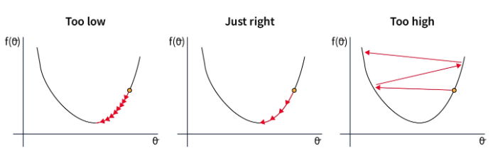

Comprendre les différents optimizers#
Dans le premier cours, on a présenté la descente du gradient, l’optimizer le plus simple pour entraîner les modèles de deep learning. Ensuite, on a utilisé la descente du gradient stochastique par mini-batch ou Adam selon les scénarios.
L’optimizer ajuste les paramètres du modèle pendant l’entraînement pour minimiser le loss. Le choix d’un bon optimizer impacte la performance et la vitesse de convergence du modèle.
Ce cours présente les différents optimizers existants (liste non exhaustive) ainsi que leurs avantages et inconvénients. En pratique, Adam est souvent le meilleur choix, mais vous pouvez tester d’autres optimizers et différentes valeurs de learning rate (la valeur optimale varie selon l’optimizer choisi).
Ce cours s’inspire de ce blogpost pour les explications et reprend les figures.
Descente du gradient#
Commençons par un rappel sur l’algorithme de descente du gradient. On peut le définir simplement par l’équation suivante : \(\theta = \theta - \alpha \cdot \nabla L(\theta)\) où \(\theta\) représente les paramètres du modèle, \(L(\theta)\) le loss sur l’ensemble des données et \(\alpha\) le learning rate.
En résumé, à chaque étape d’entraînement, on ajuste les paramètres du modèle pour minimiser le loss sur l’ensemble des données.
Voici une figure illustrant le principe de la descente du gradient :

Cette approche est simple à implémenter et fonctionne bien sur de petites quantités de données si le learning rate est bien choisi. Cependant, comme on calcule le loss sur l’ensemble des données avant d’ajuster les poids, cette méthode est très lente pour les gros datasets et inutilisable en pratique. De plus, le choix du learning rate est crucial et doit être précis, ce qui n’est pas toujours évident.
Descente du gradient stochastique#
Cette méthode adapte la descente du gradient pour des datasets volumineux. Au lieu de modifier les paramètres après avoir traité toutes les données, on calcule le loss sur une partie des données (un mini-batch) et on ajuste les poids en fonction de ce loss. C’est pourquoi on parle de méthode stochastique : les ajustements se font sur une partie des données, ce qui peut ne pas toujours réduire le loss global. En pratique, après plusieurs itérations, le loss global diminue et le modèle converge plus rapidement.
La formule est presque identique : \(\theta = \theta - \alpha \cdot \nabla L(\theta;x^{(i)};y^{(i)})\) où \((x^{(i)},y^{(i)})\) représente un mini-batch de données.

Comme le montre la figure, la pente n’est pas une ligne droite, mais le modèle finit par converger vers le minimum global.
Cette méthode est beaucoup plus rapide que la descente du gradient classique, surtout sur les gros datasets. Elle permet également d’éviter plus facilement les minimums locaux grâce à l’instabilité du processus. Cependant, cette instabilité nécessite un learning rate bien choisi pour fonctionner de manière optimale.
Descente du gradient stochastique avec momentum#
Cet optimizer reprend le principe de la descente du gradient stochastique en ajoutant un terme momentum. Comme son nom l’indique, ce terme permet de garder en mémoire la direction de l’optimisation précédente et de pousser l’optimisation actuelle à continuer dans la même direction. Ce terme est calculé et mis à jour via un exponentially decaying average. C’est très utile pour résoudre le problème des gradients faibles (régions plates).
La formule est la suivante : \(v = \beta \cdot v + (1 - \beta) \cdot \nabla_\theta L(\theta; x^{(i)}; y^{(i)})\) \(\theta = \theta - \alpha \cdot v\) où \(v\) est le vecteur de momentum et \(\beta\) est un hyperparamètre (calculé par exponentially decaying average) qui ajuste l’impact de la valeur actuelle.

En pratique, cela aide à traverser les régions plates de la fonction de loss plus efficacement tout en augmentant la vitesse de convergence. Cependant, le choix du paramètre momentum est important car un momentum trop grand pourrait nous faire sauter la solution optimale. En pratique, ce terme est choisi en fonction de la taille du mini-batch (batch size).
Exponentially decaying average : Méthode de lissage des données où chaque nouvelle valeur a un poids décroissant exponentiellement, donnant plus d’importance aux valeurs récentes tout en diminuant progressivement l’impact des valeurs passées.
Adagrad#
Adagrad est un optimizer qui ajuste le learning rate par paramètre pendant l’entraînement. Le learning rate de chaque paramètre est basé sur l’historique des gradients. L’idée est que les paramètres fréquemment ajustés auront un learning rate plus petit que ceux rarement ajustés.
La formule s’écrit de cette manière : \(g = \nabla_\theta L(\theta; x^{(i)}; y^{(i)})\) \(G = G + g \odot g\) \(\theta = \theta - \frac{\alpha}{\sqrt{G + \epsilon}} \odot g\) où \(G\) est la matrice qui accumule le carré des gradients (pour éviter les valeurs négatives) et \(\epsilon\) est une petite valeur pour éviter la division par zéro.
Cette méthode est performante lorsque les données d’entraînement sont très différentes les unes des autres, car elle ajuste les paramètres en fonction de leur fréquence d’occurrence. Cependant, le learning rate diminue continuellement, ce qui peut entraîner une convergence très lente voire une non-convergence si le learning rate devient trop petit avant la fin de l’optimisation.
RMSProp#
RMSProp repose sur la même idée qu’Adagrad, mais corrige certains de ses inconvénients. Au lieu de diminuer le learning rate progressivement pendant l’entraînement, RMSProp utilise un exponentially decaying average sur les carrés des gradients, contrairement à Adagrad qui les somme. Cela corrige le principal problème d’Adagrad, à savoir la diminution continue du learning rate sans possibilité de retour en arrière.
La formule de RMSProp est la suivante : \(g = \nabla_\theta L(\theta; x^{(i)}; y^{(i)})\) \(G = \beta \cdot G + (1 - \beta) \cdot g \odot g\) \(\theta = \theta - \frac{\alpha}{\sqrt{G + \epsilon}} \odot g\) où \(\beta\) est le paramètre pour la gestion de l’exponentially decaying average.
Les avantages sont les mêmes qu’avec Adagrad, sauf que la convergence est plus rapide. Cependant, parfois ce n’est pas suffisant et la convergence reste trop lente.
AdaDelta#
AdaDelta est un optimizer assez similaire à RMSProp, mais il n’a pas besoin d’un learning rate en hyperparamètre. Pour compenser cela, AdaDelta utilise un exponentially decaying average sur les gradients et les carrés des gradients pour déterminer une valeur d’ajustement cohérente.
La formule d’AdaDelta est la suivante : \(g = \nabla_\theta L(\theta; x^{(i)}; y^{(i)})\) \(G = \beta \cdot G + (1 - \beta) \cdot g \odot g\) \(\Delta\theta = - \frac{\sqrt{S + \epsilon}}{\sqrt{G + \epsilon} } \odot g\) \(S = \beta \cdot S + (1 - \beta) \cdot \Delta\theta \odot \Delta\theta\) \(\theta = \theta + \Delta\theta\) où \(G\) est la matrice qui accumule les gradients et \(S\) est la matrice qui accumule le carré des ajustements.
Cette méthode est intéressante car elle ne nécessite pas de choix de learning rate. Cependant, elle peut converger lentement et le learning rate calculé peut devenir trop petit, ce qui causerait un arrêt de l’entraînement.
Adam#
Adam est probablement l’optimizer le plus utilisé aujourd’hui. Il combine les idées de la descente du gradient avec momentum et de RMSProp. Adam utilise un exponentially decaying average sur les gradients et les carrés des gradients pour ajuster le learning rate, comme RMSProp. Il calcule également un momentum pour accélérer l’optimisation.
La formule est la suivante : \(g = \nabla_\theta L(\theta; x^{(i)}; y^{(i)})\) \(m = \beta_1 \cdot m + (1 - \beta_1) \cdot g\) \(v = \beta_2 \cdot v + (1 - \beta_2) \cdot g \odot g\) \(\hat{m} = \frac{m}{1 - \beta_1^t}\) \(\hat{v} = \frac{v}{1 - \beta_2^t}\) \(\theta = \theta - \frac{\alpha}{\sqrt{\hat{v}} + \epsilon} \odot \hat{m}\) où \(m\) est le vecteur de momentum, \(v\) le vecteur de velocity, \(\beta_1\) le decay pour le momentum et \(\beta_2\) le decay pour la velocity.
Il s’agit de l’optimizer le plus rapide pour la convergence et il fonctionne bien sur des données bruitées. Cependant, il nécessite de définir trois hyperparamètres, ce qui peut être un peu lourd.
En pratique, Adam fonctionne extrêmement bien et il est souvent nécessaire de ne modifier que le paramètre learning rate. Les valeurs par défaut de \(\beta_1\) et \(\beta_2\) ont rarement besoin d’être modifiées (sur PyTorch, elles sont par défaut à \(\beta_1=0.9\) et \(\beta_2=0.999\)). De plus, contrairement à la descente du gradient stochastique, un choix précis de learning rate n’est pas indispensable pour obtenir une bonne optimisation.
Note : En général, je vous conseille d’utiliser Adam ou AdamW (version améliorée de Adam) comme optimizer par défaut. En fonction de votre problème, vous pouvez être amené à tester d’autres optimizers.
Autre note : En fonction de l’optimizer choisi, l’espace mémoire nécessaire lors de l’entraînement du modèle varie. À l’heure où les gros modèles comme les LLM sont courants, c’est une information à garder en tête. Voici quelques indications sur le coût en mémoire en fonction de l’optimizer (\(n\) est le nombre de paramètres du modèle) :
Coût en mémoire n : Descente du gradient stochastique (SGD)
Coût en mémoire 2n : SGD avec momentum, Adagrad, RMSProp
Coût en mémoire 3n : Adam et ses variantes (AdamW, AdaMax, Nadam)
Point sur le choix du learning rate#
Le choix du learning rate est étroitement lié à celui de l’optimizer. Voici les situations possibles en fonction du choix du learning rate :

Dans le premier cas, le learning rate est trop faible, ce qui ralentit la convergence du modèle. Cela est coûteux en temps et en ressources.
Dans le second cas, le learning rate est bien choisi et diminue suffisamment rapidement pour atteindre le minimum de la fonction de loss. C’est cette valeur que l’on cherche à trouver.
Dans le dernier cas, le learning rate est trop élevé, ce qui entraîne des ajustements de paramètres trop importants. Cela peut conduire à une non-convergence ou même à une divergence du modèle.
Ces considérations sont cruciales pour le choix du learning rate lorsque l’on utilise la descente du gradient stochastique. Pour Adam, c’est un hyperparamètre important, mais la tolérance à l’erreur est plus grande car le learning rate est adapté dans l’optimizer.